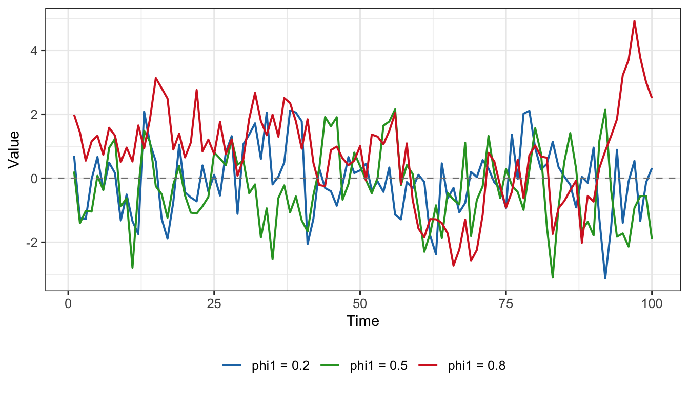
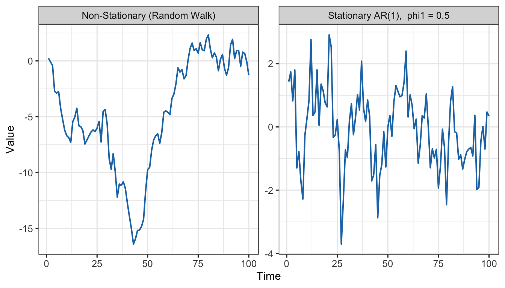
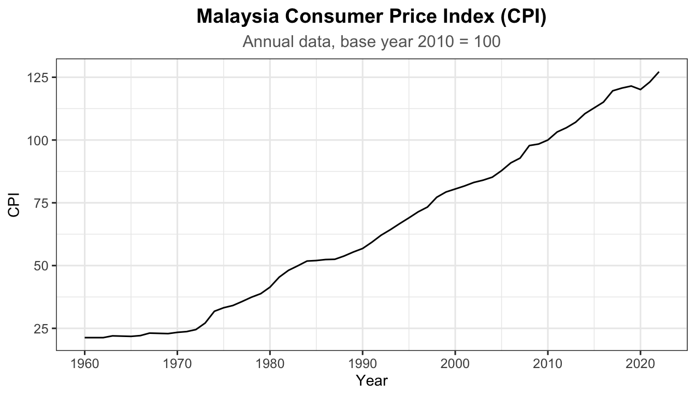
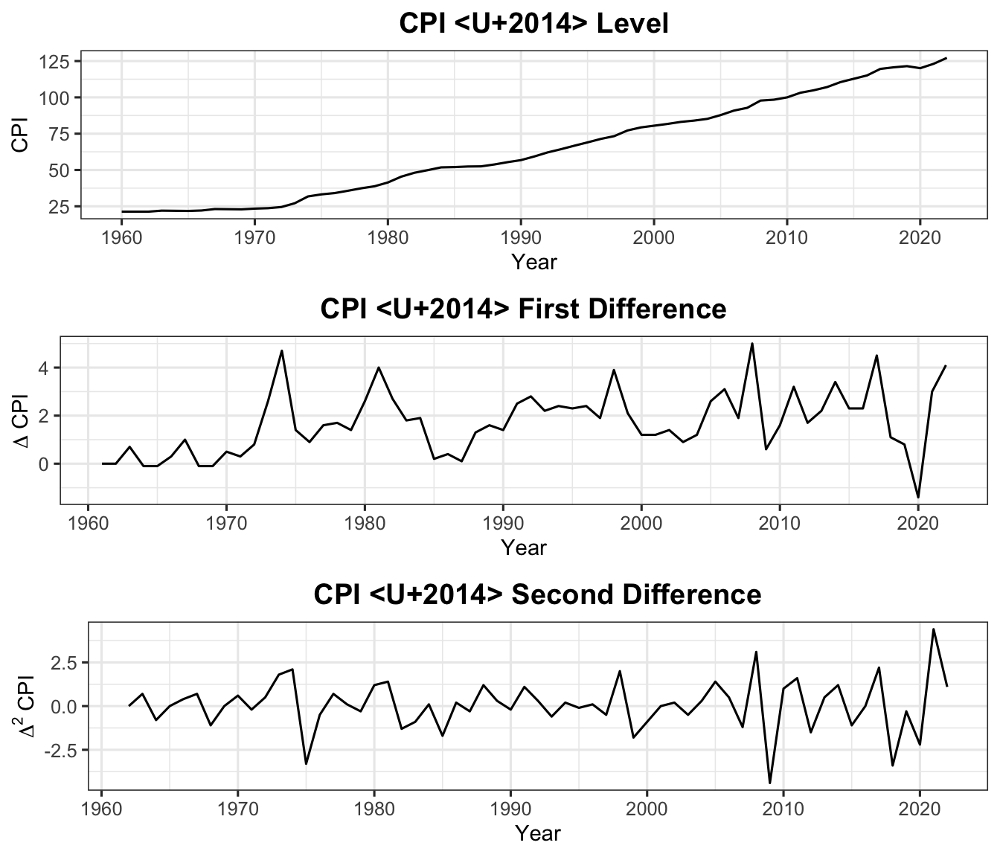

A stochastic time series is a sequence of data points collected or generated over time where the values of the series are not deterministic, but rather subject to randomness or uncertainty. In other words, the values of the time series at any given point in time are not completely predictable, but rather follow a probabilistic distribution.
Stochastic time series are commonly used in fields such as finance, economics, engineering, and environmental science to model and analyse phenomena that exhibit random behaviour over time. They are described and analysed using statistical methods, including techniques from probability theory, time series analysis, and stochastic processes.
Common stochastic processes used to model time series include:
Autoregressive (AR) processes
Moving Average (MA) processes
Autoregressive Integrated Moving Average (ARIMA) processes
More complex models such as GARCH (Generalised Autoregressive Conditional Heteroskedasticity)
Analysing stochastic time series involves:
Estimating parameters of the stochastic model
Testing for randomness or stationarity
Identifying trends and seasonal patterns
Assessing the presence of autocorrelation or other dependencies between successive observations
2 Lead vs Lag Variable
When describing stochastic processes, the subscripts \(t - k\) and \(t + k\) are used to refer to past and future observations respectively.
Lag — the difference in time between the current observation and a previous observation.
Lead — the difference in time between the current observation and a future observation.
The variable \(y_{t-k}\) is called “\(y_t\) lag \(k\)”. For example:
\(y_{t-1}\) is “\(y_t\) lag 1”
\(y_{t-2}\) is “\(y_t\) lag 2”
The variable \(y_{t+k}\) is called “\(y_t\) lead \(k\)”. For example:
\(y_{t+1}\) is “\(y_t\) lead 1”
\(y_{t+2}\) is “\(y_t\) lead 2”
2.1 Lag Variables Table
Time (\(t\))
\(y_t\)
\(y_{t-1}\)
\(y_{t-2}\)
\(y_{t-3}\)
1
\(y_1\)
—
—
—
2
\(y_2\)
\(y_1\)
—
—
3
\(y_3\)
\(y_2\)
\(y_1\)
—
4
\(y_4\)
\(y_3\)
\(y_2\)
\(y_1\)
\(\vdots\)
\(\vdots\)
\(\vdots\)
\(\vdots\)
\(\vdots\)
\(t-1\)
\(y_{t-1}\)
\(y_{t-2}\)
\(y_{t-3}\)
\(y_{t-4}\)
\(t\)
\(y_t\)
\(y_{t-1}\)
\(y_{t-2}\)
\(y_{t-3}\)
2.2 Lead Variables Table
Time (\(t\))
\(y_t\)
\(y_{t+1}\)
\(y_{t+2}\)
\(y_{t+3}\)
1
\(y_1\)
\(y_2\)
\(y_3\)
\(y_4\)
2
\(y_2\)
\(y_3\)
\(y_4\)
\(y_5\)
3
\(y_3\)
\(y_4\)
\(y_5\)
\(y_6\)
4
\(y_4\)
\(y_5\)
\(y_6\)
\(y_7\)
\(\vdots\)
\(\vdots\)
\(\vdots\)
\(\vdots\)
\(\vdots\)
\(t-1\)
\(y_{t-1}\)
\(y_t\)
\(y_{t+1}\)
\(y_{t+2}\)
\(t\)
\(y_t\)
\(y_{t+1}\)
\(y_{t+2}\)
\(y_{t+3}\)
3 Stationary
Stationarity is a fundamental concept in time series analysis. A time series is called stationary if it fluctuates randomly around some fixed value — typically the mean of the series.
Let \(y_t\) (for all values of \(t\)) be a process generated by random inputs such that for each value of \(t\) with \(p\) denoting the number of lags:
Strong stationarity requires that the joint distribution of any collection of observations is invariant to shifts in time. Formally, for any \(t_1, t_2, \ldots, t_n \in \mathbb{Z}\) and \(n = 1, 2, 3, \ldots\):
where \(F\) is the joint distribution function. For any value of \(k\) (positive or negative), the distribution is independent of the time period \(t\).
Strong stationarity is not common in economic or financial time series data. Hence, the assumption of weak stationarity is more practical.
3.2 Weakly Stationary
Weak stationarity (also called covariance stationarity) requires only that the first two moments are time-invariant. A variable \(Y_t\) is weakly stationary if:
The mean is constant, the variance is finite and constant, and there is no autocorrelation between \(y_t\) and \(y_{t+p}\) — all three conditions for weak stationarity are satisfied.
3.3.1 Forecasting Under Stationary Conditions
The \(m\)-step-ahead forecast at origin \(T\) from Equation (1) is:
Figure 1: Examples of random (white noise) process for two different means: \(\phi_0 = 8\) (blue) and \(\phi_0 = 2\) (green). Both series fluctuate randomly around their respective constant means.
3.4 AR(1) Process
An autoregressive process of order one [AR(1)] is stationary when \(|\phi_1| < 1\). The model is:
set.seed(151)yt1 <-as.numeric(arima.sim(model =list(order =c(1,0,0), ar =0.2), n =100))yt2 <-as.numeric(arima.sim(model =list(order =c(1,0,0), ar =0.5), n =100))yt3 <-as.numeric(arima.sim(model =list(order =c(1,0,0), ar =0.8), n =100))df_ar <-data.frame(t =rep(1:100, 3),value =c(yt1, yt2, yt3),phi =rep(c("phi1 = 0.2", "phi1 = 0.5", "phi1 = 0.8"), each =100))ggplot(df_ar, aes(x = t, y = value, colour = phi)) +geom_line(linewidth =0.7) +geom_hline(yintercept =0, linetype ="dashed", colour ="grey50") +scale_colour_manual(values =c("phi1 = 0.2"="#1f77b4","phi1 = 0.5"="#2ca02c","phi1 = 0.8"="#d62728")) +labs(x ="Time", y ="Value", colour =NULL) +theme_ts()

Figure 2: Stationary AR(1) series for \(\phi_1 = 0.2\) (blue), \(\phi_1 = 0.5\) (green), and \(\phi_1 = 0.8\) (red). All three fluctuate around zero; higher \(\phi_1\) produces more persistent (autocorrelated) fluctuations.
3.5 Non-Stationary Series and the Random Walk
A series that does not satisfy stationarity conditions is called non-stationary. Non-stationarity arises in two main forms:
The mean is not constant over time (e.g., an upward or downward trend).
The variance increases over time.
3.5.1 Random Walk Process
The simplest non-stationary model is the random walk:
\[
y_t = y_{t-1} + \varepsilon_t \tag{6}
\]
where \(\varepsilon_t \sim \text{i.i.d. } N(0, \sigma^2_\varepsilon)\).
This is an AR(1) process with \(\phi_1 = 1\) — the stationarity condition \(|\phi_1| < 1\) is violated.
When a drift term \(\phi_0\) is added, the model becomes a random walk with drift:
\[
\text{Var}(y_{T+k}) = k\,\sigma^2_\varepsilon \qquad \text{(increases without bound as } k \to \infty\text{)}
\]
Key implications of non-stationarity:
The variance grows linearly with forecast horizon \(k\).
Long-run forecasts are unreliable — confidence intervals widen indefinitely.
Sample autocorrelations remain large (close to 1) for many lags.
Forecasting under non-stationarity produces values linearly related to \(k\).
3.5.3 Illustration: Random Walk vs Stationary Series
Show R Code
set.seed(111)rw <-cumsum(rnorm(100, 0, 1))stat <-as.numeric(arima.sim(model =list(order =c(1,0,0), ar =0.5), n =100))df_rw <-data.frame(t =rep(1:100, 2),value =c(stat, rw),type =rep(c("Stationary AR(1), phi1 = 0.5","Non-Stationary (Random Walk)"), each =100))ggplot(df_rw, aes(x = t, y = value)) +geom_line(colour ="#1f77b4", linewidth =0.7) +facet_wrap(~type, scales ="free_y", ncol =2) +labs(x ="Time", y ="Value") +theme_ts()

Figure 3: Comparison of a stationary AR(1) series (left) and a non-stationary random walk (right). The stationary series fluctuates around a fixed mean; the random walk wanders without any fixed level.
4 Checking for Non-Stationarity
Non-stationarity can be detected using three complementary methods:
Time series plot
Autocorrelation Function (ACF)
Augmented Dickey-Fuller (ADF) test
4.1 Time Series Plot
A visual inspection of the time series plot is the first step. Characteristics of a non-stationary series include:
A clear upward or downward trend over time.
Variance that appears to increase or decrease over time.
No stable mean level around which the series fluctuates.
A stationary series, by contrast, fluctuates around a roughly constant mean with roughly constant spread.
Show R Code
autoplot(cpi_ts) +labs(title ="Malaysia Consumer Price Index (CPI)",subtitle ="Annual data, base year 2010 = 100",x ="Year", y ="CPI") +theme_ts()

Figure 4: Malaysia Consumer Price Index (CPI), 1960 to present. The steady upward trend and ever-increasing level are clear signs of non-stationarity.
The CPI series shows a persistent upward trend with no fixed mean, indicating non-stationarity.
4.2 Autocorrelation Function (ACF)
The ACF measures the correlation between a time series and its own lagged values.
Stationary series: ACF decays rapidly to zero after a few lags.
Non-stationary series: ACF decays slowly (remains significantly positive for many lags), indicating persistent dependency between observations.
Figure 5: ACF of the raw CPI series (left) and of the first-differenced CPI series (right). The slow decay in the left panel confirms non-stationarity; the rapid decay in the right panel confirms that the differenced series is stationary.
Note
The computation of the ACF and partial ACF plots are discussed in detail in Chapter 5.
4.3 Augmented Dickey-Fuller (ADF) Test
The Augmented Dickey-Fuller (ADF) test is a formal statistical test for a unit root. If a unit root is present, the series is non-stationary.
4.3.1 Hypotheses
\[H_0\colon \text{There exists a unit root — the series is non-stationary.}\]\[H_1\colon \text{There is no unit root — the series is stationary (or trend-stationary).}\]
Decision rule: If \(p\text{-value} > 0.05\) — fail to reject \(H_0\) — the series is non-stationary. If \(p\text{-value} \leq 0.05\) — reject \(H_0\) — the series is stationary.
4.3.3 Augmented Version
When additional lag terms are needed to ensure white-noise residuals, the test uses the augmented model:
where \(J\) is chosen to be small enough to preserve degrees of freedom but large enough that \(\varepsilon_t\) is white noise.
4.3.4 ADF Test: CPI Malaysia
Show R Code
library(tseries)adf.test(cpi_ts)
Augmented Dickey-Fuller Test
data: cpi_ts
Dickey-Fuller = -3.1344, Lag order = 3, p-value = 0.1156
alternative hypothesis: stationary
Since the \(p\)-value is greater than 0.05, we fail to reject\(H_0\). The Malaysia CPI series has a unit root and is non-stationary.
4.3.5 ADF Test After First Differencing
Show R Code
adf.test(diff(cpi_ts))
Augmented Dickey-Fuller Test
data: diff(cpi_ts)
Dickey-Fuller = -4.0323, Lag order = 3, p-value = 0.01411
alternative hypothesis: stationary
After first differencing, the \(p\)-value is less than 0.05 — we reject\(H_0\) and conclude that the first-differenced CPI series is stationary.
5 Differencing
Differencing is the most common technique to transform a non-stationary series into a stationary one. It involves computing the differences between consecutive observations.
5.1 Order of Differencing
5.1.1 First-Order Differencing
\[
\Delta y_t = y_t - y_{t-1} \tag{19}
\]
5.1.2 Second-Order Differencing
Differencing performed on the first-differenced series:
Exercise: Show that first-order differencing of \(T_t = \alpha + \beta t\) yields a constant (stationary) series. Show that second-order differencing of \(T_t = \alpha + \beta_1 t + \beta_2 t^2\) yields a constant.
5.2 Differencing Example
The table below illustrates first- and second-order differencing using a hypothetical CPI series.
Year
\(y_t\)
\(y_{t-1}\)
\(\Delta y_t\)
\(\Delta y_{t-1}\)
\(\Delta^2 y_t\)
2010
100.0
—
—
—
—
2011
103.2
100.0
3.2
—
—
2012
104.9
103.2
1.7
3.2
−1.5
2013
107.1
104.9
2.2
1.7
0.5
2014
110.5
107.1
3.4
2.2
1.2
2015
112.8
110.5
2.3
3.4
−1.0
2016
115.1
112.8
2.4
2.3
0.0
2017
119.6
115.1
4.5
2.4
2.1
2018
120.7
119.6
1.1
4.5
−3.4
2019
121.5
120.7
0.8
1.1
−0.3
2020
120.1
121.5
−1.4
0.8
−2.2
5.3 Differencing in R: CPI Malaysia
Show R Code
p_level <-autoplot(cpi_ts) +labs(title ="CPI — Level", x ="Year", y ="CPI") +theme_ts()p_diff1 <-autoplot(diff(cpi_ts, differences =1)) +labs(title ="CPI — First Difference", x ="Year", y =expression(Delta~CPI)) +theme_ts()p_diff2 <-autoplot(diff(cpi_ts, differences =2)) +labs(title ="CPI — Second Difference", x ="Year", y =expression(Delta^2~CPI)) +theme_ts()grid.arrange(p_level, p_diff1, p_diff2, nrow =3)

Figure 6: Malaysia CPI in levels (top), first differences (middle), and second differences (bottom). First differencing removes the trend; the resulting series fluctuates around a stable mean.
6 Backward Shift Operator
The backward shift operator\(B\) provides compact algebraic notation for lag operations in time series models.
6.1 Definition
\[
B y_t = y_{t-1}
\]
Applying \(B\) repeatedly:
\[
B^2 y_t = B(B y_t) = B y_{t-1} = y_{t-2}
\]
\[
B^k y_t = y_{t-k}
\]
For monthly data, a twelve-period backward shift is written as:
\[
B^{12} y_t = y_{t-12}
\]
6.2 Differencing Using the Backward Shift Operator
Exercise: Verify that \((1-B)^2 y_t \neq (1 - B^2) y_t\) by expanding both sides.
6.3 Summary of Backward Shift Notation
Operation
Expression
Lag 1
\(B y_t = y_{t-1}\)
Lag \(k\)
\(B^k y_t = y_{t-k}\)
First difference
\((1-B)y_t = \Delta y_t\)
Second difference
\((1-B)^2 y_t = \Delta^2 y_t\)
Seasonal difference (monthly)
\((1-B^{12})y_t = y_t - y_{t-12}\)
Seasonal difference (quarterly)
\((1-B^4)y_t = y_t - y_{t-4}\)
7 Distinguishing Non-Stationary from Stationary Series
In practice, it is essential to correctly identify whether a time series is stationary or non-stationary before proceeding with model identification and estimation. Using an incorrect model on a non-stationary series can lead to spurious regression — falsely indicating a relationship between two unrelated trending series.
The table below summarises the key distinguishing characteristics.
Feature
Stationary
Non-Stationary
Mean
Constant over time
Changes over time (trend or drift)
Variance
Finite and constant
May increase over time
Time series plot
Fluctuates around a fixed level
Trends upward/downward or wanders
ACF pattern
Decays rapidly to zero
Decays slowly; large over many lags
ADF test \(p\)-value
\(\leq 0.05\) (reject \(H_0\))
\(> 0.05\) (fail to reject \(H_0\))
Example process
White noise; AR(1) with \(|\phi_1|<1\)
Random walk; AR(1) with \(\phi_1 = 1\)
7.1 Practical Decision Procedure
To determine whether a series requires differencing before modelling, follow these steps:
Step 1 — Plot the series. If the series shows a clear trend or wandering behaviour with no stable mean, it is likely non-stationary.
Step 2 — Inspect the ACF. Compute the sample ACF up to at least 20 lags. If the autocorrelations decay very slowly (remain above the significance bands for many lags), the series is non-stationary.
Step 3 — Conduct the ADF test. A \(p\)-value \(> 0.05\) confirms non-stationarity (fail to reject \(H_0\)).
Step 4 — Apply differencing. Take the first difference and repeat Steps 1–3 on \(\Delta y_t\). Continue differencing until all three diagnostics indicate stationarity. For most economic time series, one round of first differencing is sufficient.
Step 5 — Check variance stability. If the variance increases over time, apply a log transformation (\(\ln y_t\)) before differencing to stabilise the variance.
7.1.1 Illustration: Full Diagnostic Workflow on CPI Malaysia
Figure 7: Full stationarity diagnostic for Malaysia CPI. Top row: level series and its ACF (non-stationary — slow ACF decay). Bottom row: first-differenced series and its ACF (stationary — rapid ACF decay).
The four-panel diagnostic confirms:
Level series (top row): Trending upward with slowly decaying ACF — non-stationary.
First-differenced series (bottom row): Fluctuates around zero with rapidly decaying ACF — stationary.
Note
Once stationarity is confirmed, the series is ready for model identification using the ACF and Partial ACF (PACF) within the Box-Jenkins framework, covered in Chapter 5.
8 Conclusion
In this chapter, we introduced the concept of stochastic time series and the fundamental property of stationarity. The key takeaways are:
A stationary series has a constant mean, constant variance, and autocovariance that depends only on the lag \(k\) — not on absolute time \(t\).
The random process (white noise) is the simplest stationary model; the AR(1) process is stationary when \(|\phi_1| < 1\).
A non-stationary series (e.g., random walk) has a mean and/or variance that changes over time, making inference and forecasting unreliable without transformation.
Non-stationarity is detected via the time series plot, ACF, and the Augmented Dickey-Fuller test.
Differencing is the standard remedy: first-order differencing removes a linear trend; second-order differencing removes a quadratic trend.
The backward shift operator\(B\) provides a concise algebraic language for expressing lag structures and differencing operations.
These concepts form the foundation for ARIMA modelling and the Box-Jenkins methodology presented in Chapter 5.
9 References
Mohd Alias Lazim (2013). Introductory Business Forecasting: A Practical Approach (3rd ed.). UPENA, UiTM. ISBN: 978-983-3643.